Piezas de carrocería para BMW en Panamá
102 piezas disponibles hoy, cada una con su foto y su código: parrillas (12), defensas delanteras (12), defensas traseras (11), flares (10).
- Garantía de 3 días
- Foto real de cada pieza
- Efectivo, Yappy o ACH
- Lunes a sábado, 8:00 a. m. a 5:00 p. m.
Por modelo
Parrillas para BMW 12
 643X32010
643X32010 644X12022 · original
644X12022 · original 645X1 U112011 · original
645X1 U112011 · original 646X62024 · genérico nuevo
646X62024 · genérico nuevo 651X62024 · genérico nuevo
651X62024 · genérico nuevo 652X52019-23 · original
652X52019-23 · original 658X1 F482021 · original
658X1 F482021 · original 657X1 F482021 · original
657X1 F482021 · original 660X4 G022018
660X4 G022018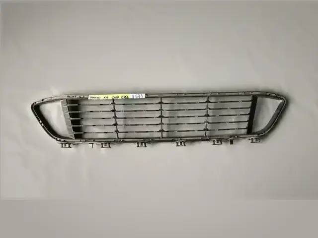
671X12013 · original 680X52013 · original nuevo
680X52013 · original nuevo CH152X42011-17 · lado derecho · original
CH152X42011-17 · lado derecho · originalDefensas delanteras para BMW 12
 820X1 U11 C/parrilla2023-24 · original
820X1 U11 C/parrilla2023-24 · original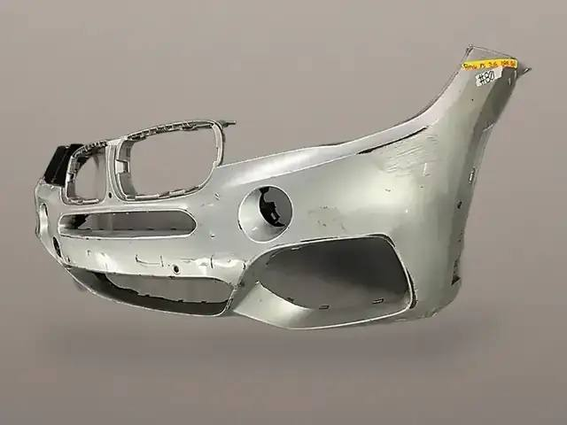
821X52018 · original 822X32018 · original
822X32018 · original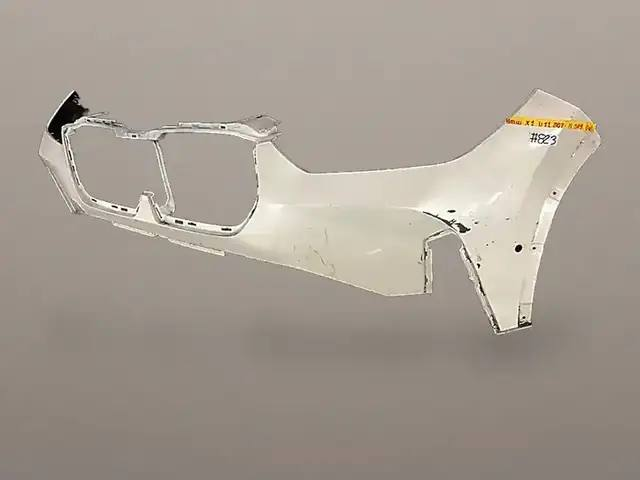
823X1 U112007-15 · original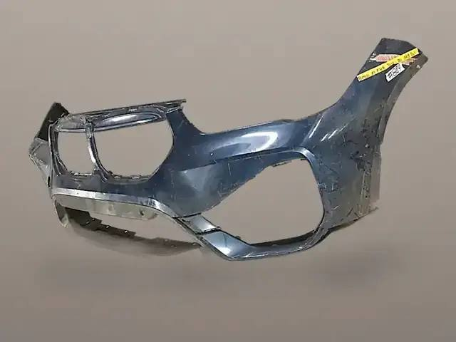
824X1 F482015-20 · original 825X32023 · original
825X32023 · original 826X1 F482015-20 · original
826X1 F482015-20 · original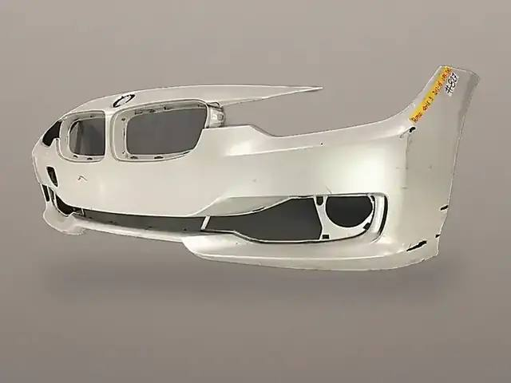
827Serie 32012-18 · original 828X62024 · original
828X62024 · original 839X12024 · original
839X12024 · original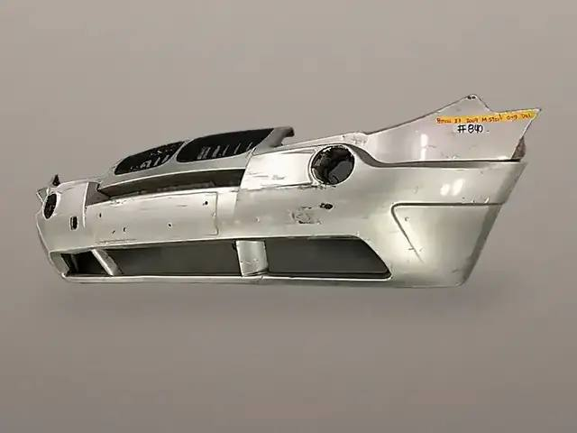
840X3 M Sport2009 · original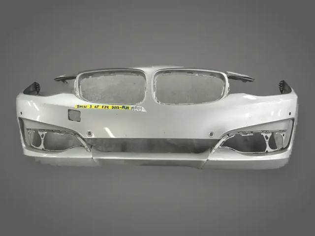
843Serie 3 GT F342013-2020 · originalDefensas traseras para BMW 11
 DT160X52016 · original
DT160X52016 · original DT161X32018-21 · original
DT161X32018-21 · original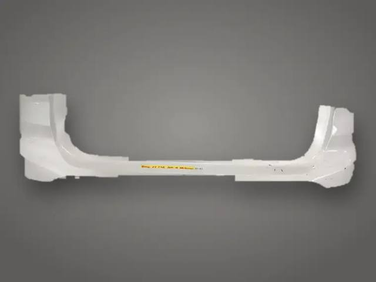
DT162X1 F482014-18 · original DT163X1 F482014-18 · original
DT163X1 F482014-18 · original DT164X3 G012020-23 · original
DT164X3 G012020-23 · original DT165X42015-18 · original
DT165X42015-18 · original DT166X3 G012020-24 · original
DT166X3 G012020-24 · original DT167X12023-25 · original
DT167X12023-25 · original DT168X12023-25 · original
DT168X12023-25 · original DT1693 Series2012-19 · original
DT1693 Series2012-19 · original DT170X12023-25 · original
DT170X12023-25 · originalFlares para BMW 10
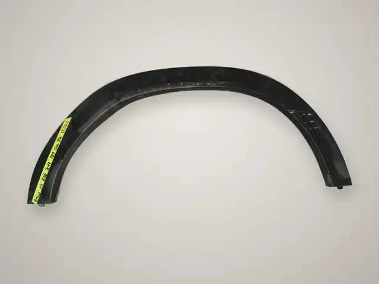
FL002X6 G062019 · lado derecho · original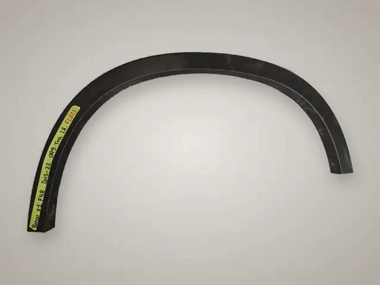
FL021X1 F482015-22 · lado izquierdo · original FL029X32018-20 · lado derecho · original
FL029X32018-20 · lado derecho · original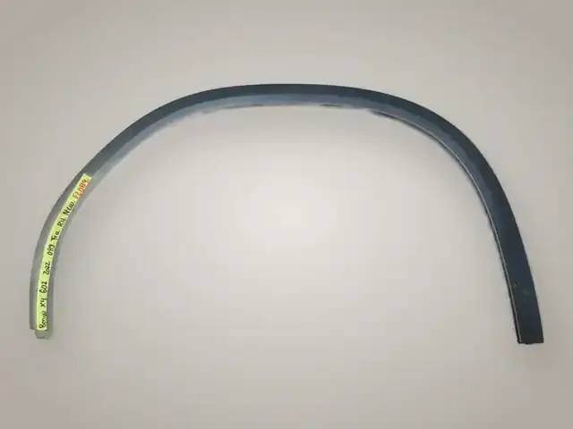
FL089X42022 · lado derecho · original FL091X12011 · lado derecho · original
FL091X12011 · lado derecho · original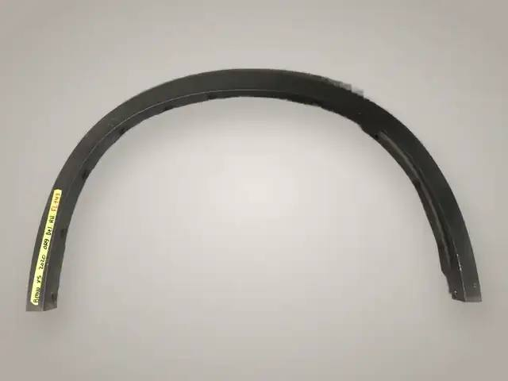
FL143X52020 · lado derecho · original FL113X12011-20 · lado izquierdo · original
FL113X12011-20 · lado izquierdo · original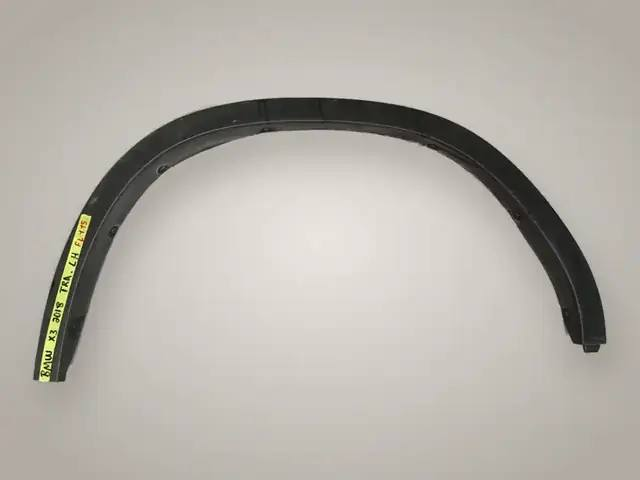
FL115X32018 · lado izquierdo · original FL161X3 E832004 · lado izquierdo · original
FL161X3 E832004 · lado izquierdo · original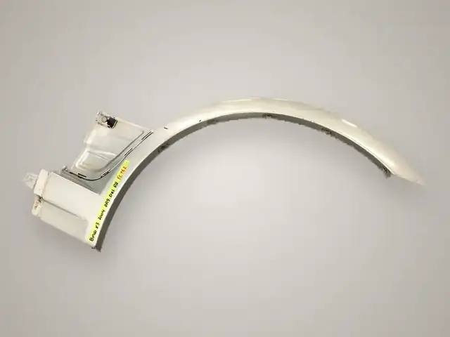
FL162X3 E832004 · lado derecho · originalDefensas traseras inferiores para BMW 8
 DTI006X3 xDrive2022-26 · original
DTI006X3 xDrive2022-26 · original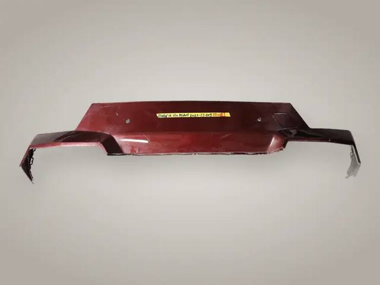
DTI011iX (I20) M Sport2021-23 · original DTI012X12022-26 · original
DTI012X12022-26 · original DTI042X1 (U11)2022 · original
DTI042X1 (U11)2022 · original DTI048X32018-23 · original
DTI048X32018-23 · original DTI049X3 (G01)2022-23 · original
DTI049X3 (G01)2022-23 · original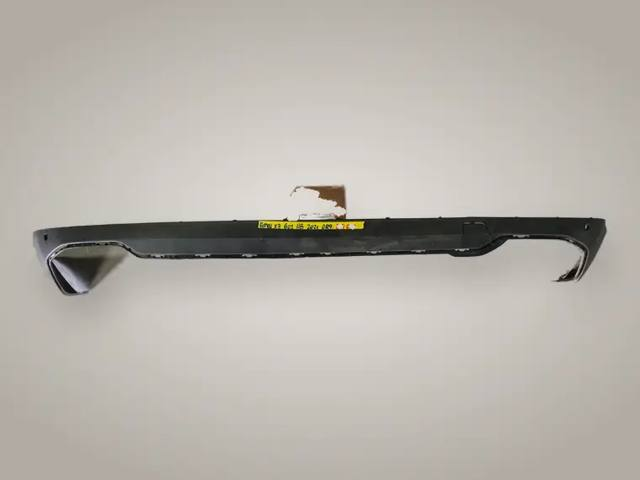
DTI050X3 (G01)2022-23 · original DTI051X3 (G01) xLine2018-21 · original
DTI051X3 (G01) xLine2018-21 · originalDefensas delanteras inferiores para BMW 6
 DDI004X4 F262015-18 · original
DDI004X4 F262015-18 · original DDI008X3 G012022-24 · original
DDI008X3 G012022-24 · original DDI037X5 E702011-13 · original nuevo
DDI037X5 E702011-13 · original nuevo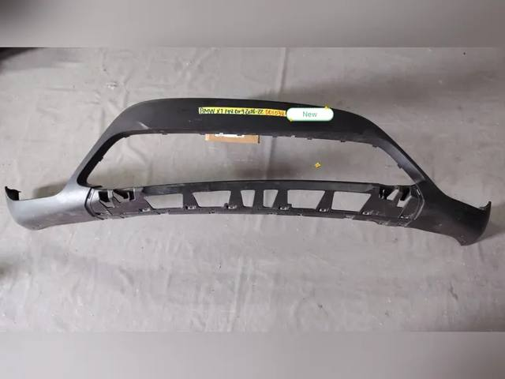
DDI038X1 F482016-22 · original nuevo DDI041X3 F252015-17 · original
DDI041X3 F252015-17 · original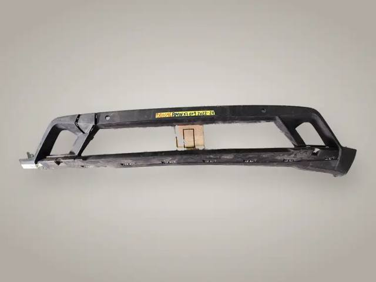
DDI046X32022-24 · originalLámparas traseras para BMW 5
 354X32018-20 · lado derecho · original
354X32018-20 · lado derecho · original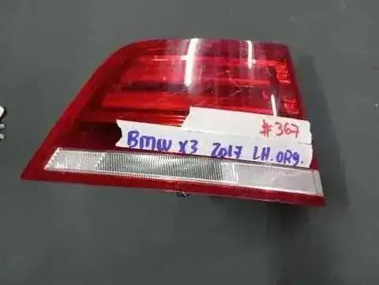
367X32017 · lado izquierdo · original 368X32017 · lado derecho · original
368X32017 · lado derecho · original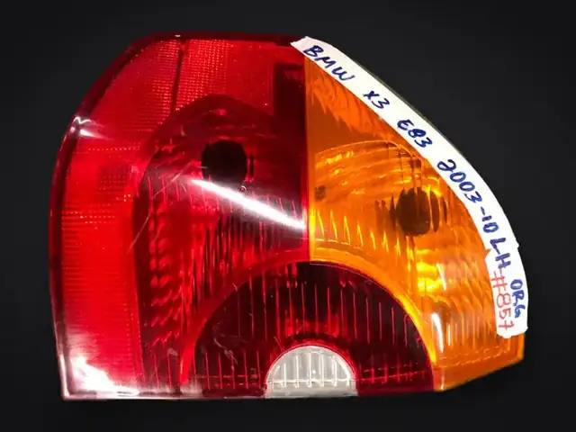
857X3 E832003-10 · lado izquierdo · original 861X3 E832003-10 · lado derecho · original
861X3 E832003-10 · lado derecho · originalEstribos y rolling boards para BMW 5
 RB004X3 E832004 · lado derecho · original
RB004X3 E832004 · lado derecho · original RB005X3 E832004 · lado izquierdo · original
RB005X3 E832004 · lado izquierdo · original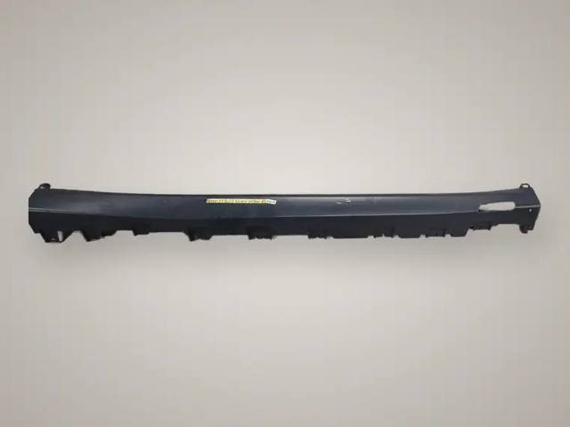
RB014X72019-2025 · lado derecho · original nuevo RB047Serie 3 F30 / F312013-2015 · lado derecho
RB047Serie 3 F30 / F312013-2015 · lado derecho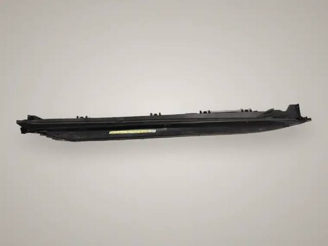
RB054i4 G262022-2024 · lado derecho · originalGuardafangos para BMW 5
 GF103X12016-2022 · lado izquierdo · original
GF103X12016-2022 · lado izquierdo · original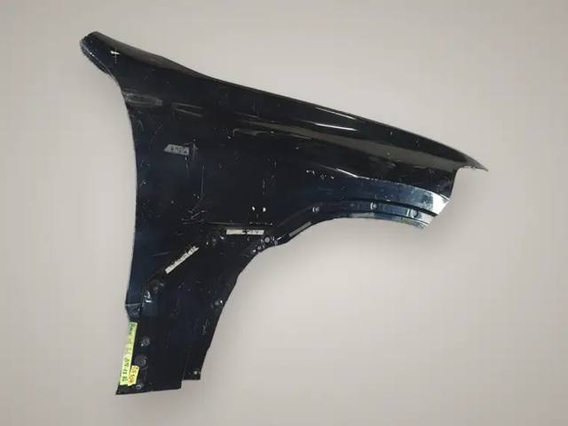
GF104X6 G062018-2023 · lado derecho · original GF105X52018-2020 · lado derecho · original
GF105X52018-2020 · lado derecho · original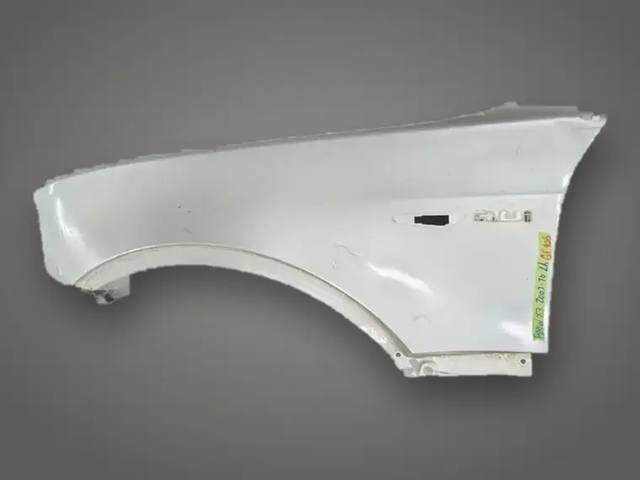
GF106X32003-2010 · lado izquierdo · original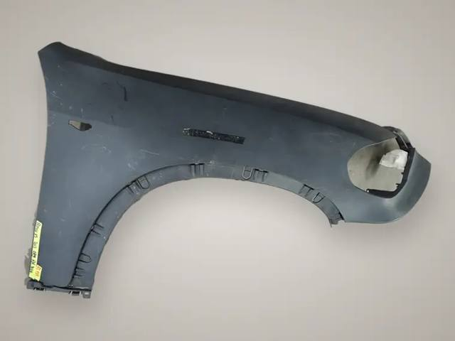
GF138X52013 · lado derecho · original nuevoPuertas para BMW 5
 PT063X32018-25 · lado derecho · original
PT063X32018-25 · lado derecho · original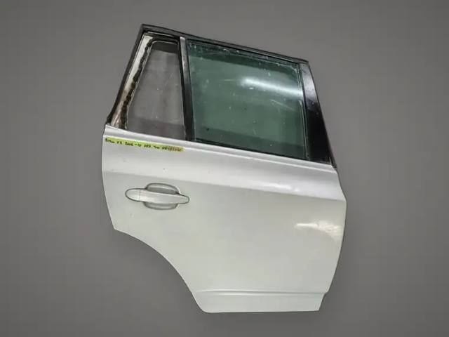
PT060X32006-2010 · lado derecho · original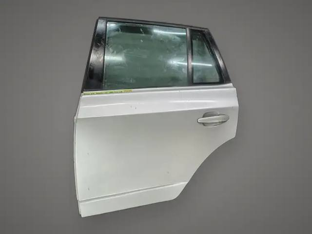
PT059X32004-2010 · lado izquierdo · original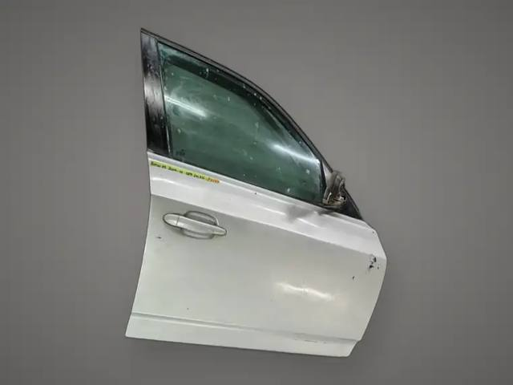
PD035X32004-2010 · lado derecho · original PD034X32004-2010 · lado izquierdo · original
PD034X32004-2010 · lado izquierdo · originalTapas de baúl para BMW 4
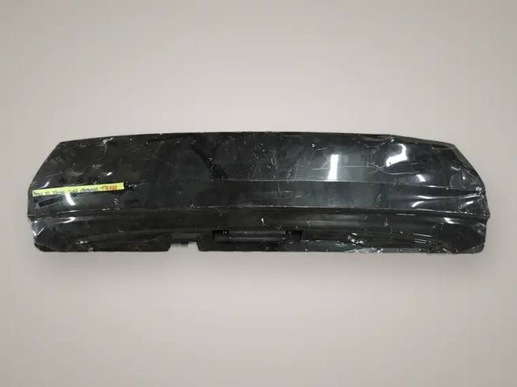
TB020X5 xDrive2019-25 · original TB036X3 G012018-24 · original
TB036X3 G012018-24 · original TB048X3 E832004-10 · original
TB048X3 E832004-10 · original TB054X1 F482016-22 · original
TB054X1 F482016-22 · originalFaros y lámparas delanteras para BMW 3
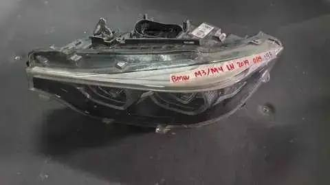
198M3/M42019 · lado izquierdo · original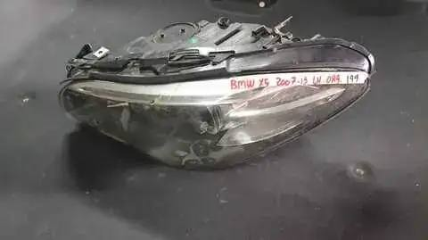
199X52007-13 · lado izquierdo · original 200X32018 · lado izquierdo · original
200X32018 · lado izquierdo · originalRefuerzos delanteros para BMW 3
 R012X3 / X4
R012X3 / X4 R013X1
R013X1 R015X5
R015X5Molduras traseras para BMW 2
 MLT008iX (I20)
MLT008iX (I20)Covers de halógena para BMW 2
 CH060X1
CH060X1Halógenas y faros antiniebla para BMW 2
 HA082X3 / X4
HA082X3 / X4 HA083X3 / X4
HA083X3 / X4Cubrepolvos para BMW 1
 CP070X3
CP070X3Retrovisores para BMW 1
Capós para BMW 1
 TM035X1 U11
TM035X1 U11Extensiones de defensa trasera para BMW 1
 EDT017iX
EDT017iXRefuerzos traseros para BMW 1
 R014X3 / X4
R014X3 / X4Guardafangos traseros para BMW 1
 GFT011X5 G05
GFT011X5 G05Vidrios para BMW 1
Otras marcas
ToyotaKIAHyundaiNissanSuzukiHondaGACMitsubishiFordMercedes-BenzMazdaChevroletJeepForthingIsuzuVolkswagenBYDLexusAudiMiniCheryRAMFiatMaxusJaecooLincolnDFSKDodgeChanganMGPorschePeugeotAcuraSubaruInfinitiDongfengHavalOmodaDaewooLand RoverVolvoJMCUniversalJACGMCOpelCadillacScionRenaultKaiyiDaihatsuKarryInternationalJaguarGeelyFaw